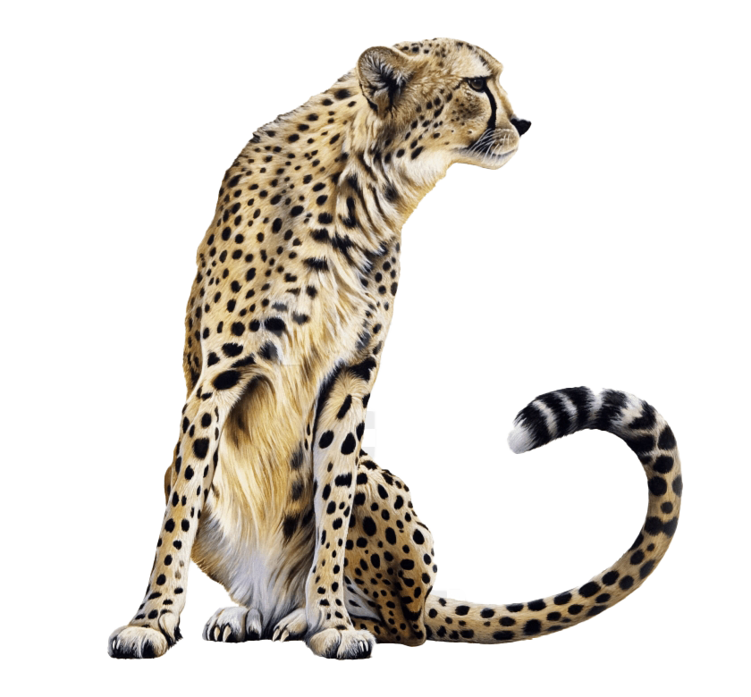
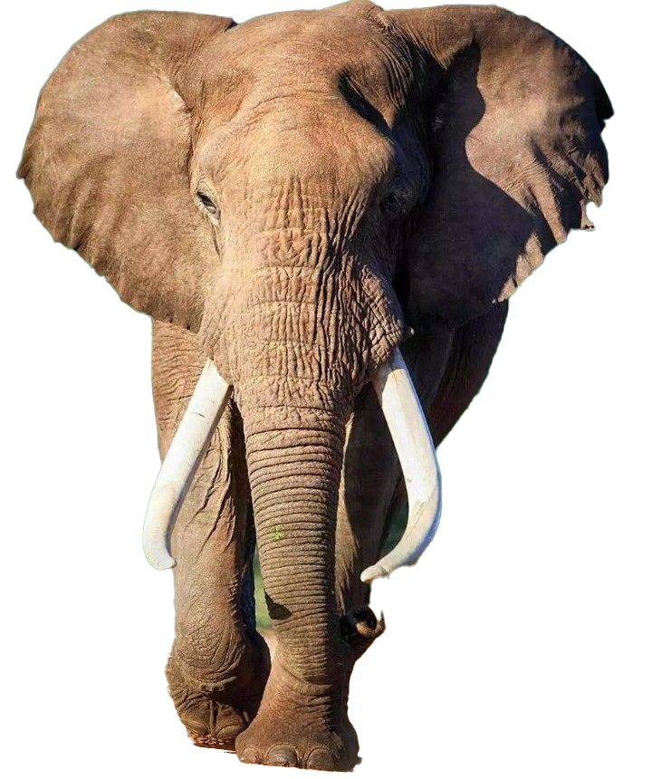
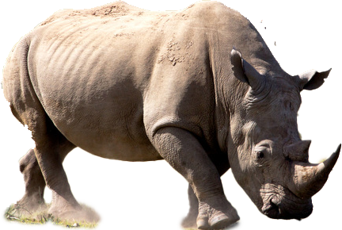

Meet the animals of the savanna
A savanna is an ecosystem characterized by scattered trees over a continuous layer of grass, found in transitional zones between forests and deserts, typically in tropical regions with warm temperatures year-round but distinct wet and dry seasons. These unique environments support diverse flora and fauna, including large grazers, and are crucial for global ecosystems, covering a significant portion of the Earth's landmass.
In this page, I will highligth the amazing wildlife roaming these lands.
The Cheetah
Cheetahs are the fastest land mammals on Earth, known for their incredible speed due to their flexible spines, long legs, and unique semi-retractable claws that provide grip. They are diurnal, hunting during the day, and differ from other big cats by not roaring, instead using chirps, purrs, and chirrups to communicate. Their spotted coats provide camouflage, and their tails act as rudders for balance during high-speed chases.
The Elephant
Elephants are the largest land mammals on earth and have distinctly massive bodies, large ears, and long trunks. They use their trunks to pick up objects, trumpet warnings, greet other elephants, or suck up water for drinking or bathing, among other uses. Both male and female African elephants grow tusks and each individual can either be left- or right-tusked, and the one they use more is usually smaller because of wear and tear. Elephant tusks serve many purposes. These extended teeth can be used to protect the elephant's trunk, lift and move objects, gather food, and strip bark from trees. They can also be used for defense. During times of drought, elephants even use their tusks to dig holes to find water underground. Two genetically different African species exist: the savanna elephant and the forest elephant, with a number of characteristics that differentiate them both.
The Rihno
Rhinos are large, herbivorous mammals known for their distinctive horns, which are made of keratin and never stop growing. There are five species of rhinos—Black, White, Javan, Sumatran, and Indian—each with unique characteristics like a prehensile lip on the Black Rhino or the hairiness of the Sumatran Rhino. Despite their thick skin and powerful build, rhinos have poor vision but possess an acute sense of smell, and their sensitive skin can still get sunburnt. Rhinos play a vital role in their ecosystems by creating waterholes, spreading seeds, and maintaining grasslands, but they face serious threats from poaching and habitat loss.
The Saiga Antelope

The saiga antelope has a distinctive large, flexible nose that filters dust in summer and warms air in winter, and it is a migratory species living in Central Asia's steppes. It is a surviving Ice Age relic that can run fast to escape predators. The saiga has faced severe population declines due to poaching for its horns and devastating disease outbreaks but has shown remarkable resilience, with populations recovering after severe crashes.